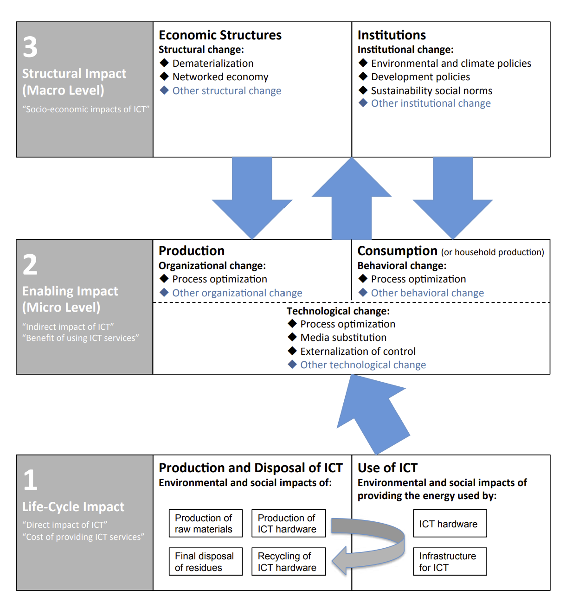

3 Sustainable Digitalization
To consider sustainable digitalization, we’ll combine the concepts we established around sustainability as a normative concept and digitalization and sustainability transformations as socio-technical change processes.
For a very recent overview on sustainable digitalization research with lots of good references for further reading, see this 2023 special issue in GAIA (intro: Barth et al. 2023).
The Digital Reset report (Digitalization for Sustainability (D4S) 2022) is a great report more targeted toward policymakers.
Hilty and Aebischer (2015) gives a good overview over a lot of slightly older research that has been carried out on the impact of ICT on sustainability. It also features an interestingly succinct introduction to sustainability.
3.1 Starting point: The LES framework
Hilty and Aebischer (2015, 20) proposed the Life-cycle, Enabling, Structural (LES) framework as a high-level heuristic to think about the impact of ICT on sustainability in a more structured way. Their model is helpful as a starting point as it is relatively empirical in focusing on impacts on resources use without taking a a priori stance on eg. acceptable forms of substitution Section 1.1.2. It categorizes the impact of ICT on sustainability on three levels.
Life-cycle impacts refer to the direct material impacts of technology, eg. raw materials used to build hardware or electricity used in running it. These impacts have become more present in societal discourse recently as people have started realizing that something named in a deceptively ephemeral way like “cloud computing” actually relies on physical infrastructure like data centers.
Enabling impacts refer to actions on the micro level that are made possible by ICT and can be in line or non-aligned with sustainability goals. Staying with data centers, these could be actions like streaming movies or working from home depending on virtual meetings. Three types of enabling impacts are proposed:
- Process optimization is seen as a special type of substitution where immaterial resources (information at the most abstract level) substitute material resources. An interesting example given in Hilty and Aebischer (2015, 25) are route planning algorithms and hardware, which can be seen as information provision enabled by ICT to reduce energy use of travel.
- Media substitution replaces a material with another material resource. This is more straightforward, eg. e-books replacing printed books.
- Externalization of control substitutes one immaterial with another immaterial resource. This is also a bit tricky, but a good example is a already centrally, algorithmically controlled greenhouse (implying a previous step of process optimization), which can now be controlled remotely and uses data to optimize its algorithms from other connected greenhouses.
The LES framework relies heavily on a distinction between material and immaterial resources (along distinctions between natural/ human-made and renewable/ non-renewable) and draws on a definition (Hilty and Aebischer 2015, 5) defining a material resource as a resource where using it affects its other uses. Eg. oil that is burnt cannot be used again to provide energy, while something like knowledge or birdsong is not consumed by using it.
- Structural impacts are persistent macro-level changes in economic structures and societal institutions. The LES in its original formulation was relatively thin on this but recent work on sustainable digitalization has put much more emphasis on this (eg. Digitalization for Sustainability (D4S) 2022).

3.2 Combining the LES framework and core strategies
Moving in a more normative direction, we can now think more about how the different core sustainability strategies see 1.1.3 can target different areas of the LES framework (Santarius and Wagner 2023).
| Life-cycle | Enabling | Structural | |
|---|---|---|---|
| Sufficiency | |||
| Efficiency | |||
| Consistency |
3.3 Going beyond resource use
In its initial conception, the LES framework is somewhat narrowly focused on resource use and thus limited with regard to some sustainability aspects. For example, the framework does not cover the distributive justice aspects of sustainability extensively, especially with regard to intra-generational justice.
In fairness, Hilty and Aebischer (2015, 23) state that the model does not attempt to cover all impacts and can/ should be extended.